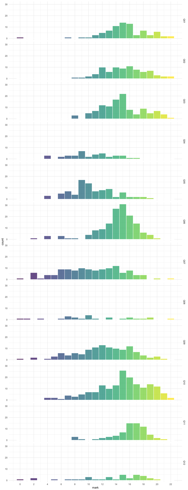

Feedback
We are also using R to generate exam and assessment feedback and reports using markr. The code for this is quite specific to our department right now, but Lisa will work to make it more generic and available to other groups soon.
# install markr
devtools::install_github("debruine/markr")
# load the marks and feedback from all files in the marking directory
marks <- load_marks(
"marking/directory", # file or directory with marking spreadsheets
evalfile = "l1_eval.csv", # optional file for making feedback tables
moodlefile = "Moodle_id_exam_feedback.csv", # optionally match to moodle ID from moodle.xlsx file
dir = "feedback/level1/" # directory to save feedback files in
)
# make a report summarising the overal marking distribution (mark_dist)
# and the distribution for each eval category (cat_dist)
make_report(
marks,
show = c("mark_dist", "cat_dist")
)
# render feedback files from the template for each student
make_feedback(
marks,
template = "L1_template.Rmd",
filename = "L1_feedback.pdf",
moodle_dir = TRUE # save files with the wierd Moodle directory structure
)Example Marking Spreadsheet
Example Feedback
Example Assessment Report
Example Exam Visualisations
You can visualise the distribution of marks across different questions in an exam.

Or across all classes.